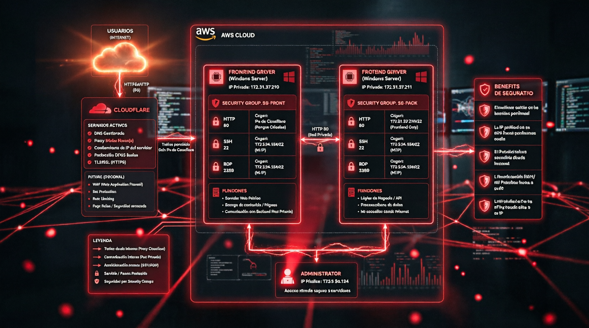
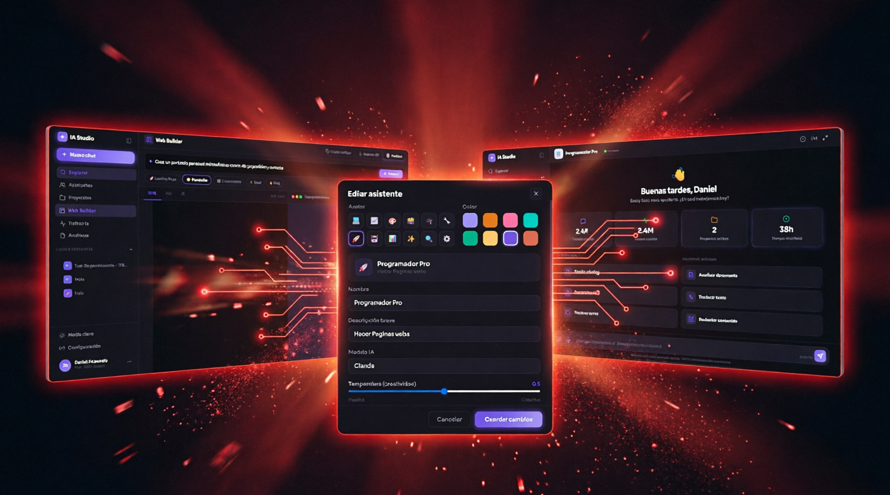

Cada proyecto representa un desafío empresarial resuelto con
arquitectura limpia y tecnología de punta.

CloudPlataforma web para gestión de alumnos desarrollada como proyecto universitario, con frontend y backend en instancias separadas de AWS.
El equipo universitario necesitaba una plataforma funcional para gestionar alumnos, sin experiencia previa en despliegue cloud.
Diseñé la arquitectura completa: frontend y backend en instancias EC2 separadas, con medidas básicas de seguridad y hosting vía Cloudflare.
MVP funcional entregado a tiempo, con arquitectura clara que el equipo pudo entender y mantener.
Remasterización completa de mi portafolio, con formulario de contacto y tracking de visitas conectados a automatizaciones propias en n8n.
Mi portafolio anterior era de una sola página, sin automatizaciones ni forma de saber quién lo visitaba.
Rediseño completo a un sitio multi-página, con webhooks propios en n8n para notificarme visitas y mensajes de contacto en tiempo real.
Sitio en producción, 100% propio, con notificaciones automáticas funcionando en vivo — este mismo sitio que estás viendo.

IAProyecto personal en desarrollo: plataforma tipo chat con IA, documentando desde cero infraestructura y base de datos.
Quería profundizar en el diseño de infraestructura de IA por cuenta propia, más allá de usar APIs de terceros.
Estoy construyendo una plataforma propia tipo chat, documentando cada decisión de infraestructura y base de datos.
Proyecto en curso — documentación de infraestructura ya completa, plataforma en desarrollo activo.
Agente conversacional por WhatsApp que interpreta solicitudes y dirige la conversación hacia sub-agentes especializados usando búsqueda vectorial.
Gestionar varias tareas operativas (inventario, finanzas, consultas) requería saltar entre herramientas distintas sin un punto de entrada único.
Diseñé a Sox, un agente central en n8n que recibe mensajes por WhatsApp, interpreta la intención con Mistral y usa tablas vectoriales para dirigir la conversación al sub-agente correcto.
Un solo punto de contacto por WhatsApp que coordina múltiples soluciones automatizadas sin que el usuario deba saber cuál usar.
Sub-agente que recibe imágenes, las analiza y genera cuadros de auditoría e inventario automáticamente en Google Sheets.
El dueño del negocio invertía horas revisando y registrando manualmente el inventario a partir de fotos de productos.
Work recibe las imágenes, extrae la información relevante y genera cuadros de auditoría y análisis directo en Google Sheets, apoyado en PostgreSQL para el registro histórico.
El trabajo de revisión de inventario del owner quedó completamente automatizado.
Sub-agente que registra ingresos y gastos en una hoja de cálculo y genera gráficas automáticas para visualizar los mayores gastos.
Llevar el control de ingresos y gastos a mano dificultaba identificar rápidamente en qué se estaba gastando más.
Este sub-agente registra cada movimiento en una tabla de Google Sheets y genera gráficas automáticas que muestran los mayores gastos de un vistazo.
Visibilidad clara e inmediata de gastos e ingresos, sin necesidad de armar reportes manuales.
Sub-agente asistente de Work: crea la estructura de bases de datos necesaria para generar cuadros de análisis a partir de un simple prompt.
Cada nuevo tipo de cuadro de análisis para Work requería crear manualmente la estructura de base de datos correspondiente.
Este sub-agente asiste a Work generando automáticamente la estructura de base de datos necesaria a partir de un simple prompt en lenguaje natural.
Nuevos cuadros de análisis listos en segundos, sin escribir estructura de base de datos manualmente.